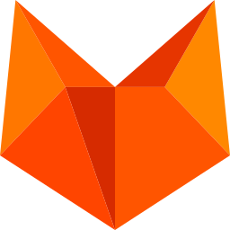

彻底终结工具割裂。橙狐终端以重构级性能与无追溯隐私架构，将远程 SSH、双栏 SFTP、低延迟 VNC、云原生容器与 Linux 算力全维监控完美融于一体。掌控全栈集群，只在指尖一步到位。 Redefine your infrastructure control. FoxTerm unifies high-performance SSH, dual-pane SFTP, hardware-accelerated VNC, container management, and real-time Linux system metrics into a single, uncompromised powerhouse with zero-trust privacy.
# Welcome to FoxTerm (橙狐终端) v1.2.0 - Universal Purchase # Welcome to FoxTerm v1.2.0 - Universal Purchase
foxterm connect prod-gpu-cluster --protocol=ssh --key=~/.ssh/id_ed25519
✓ Connected to US-East Gateway (Latency: 18ms) | GPU: NVIDIA A100-80GB (24% Load)
$ foxterm stats --live
CPU: 12.4% | RAM: 32.1/128 GB | DISK: 412/2000 GB | NET: 🚀 1.2 GB/s
CONTAINER: 14 Running | PODMAN: Rootless Active | VNC Engine: Ready
从黑白荧光屏的幽暗中觉醒。几何切割的炽橙战衣之下，是用纯粹原生性能重构的终极掌控力。 Forged in the shadows of legacy consoles. Sharp, precise, and unleashed—redefining absolute mastery with pure native horsepower.
灵狐掠过荒原，不留余影。摒弃臃肿的 Web 壳伪装，基于系统底层的极速渲染 Engine，让万行高频指令与海量日志流如同闪电般瞬间撕裂延迟。 Striking like a phantom through the digital wilderness. Bypassing bloated Web wrappers with raw native engine rendering—delivering instantaneous execution without a millisecond of lag.
沉闷沉寂的三十年黑白终端，由我们撕开缺口。橙色不是饰品，是极客灵魂深处不熄的创世狂热。用未来感工业美学，将每一次敲击转化为视听艺术。 Dismantling thirty years of monochrome stagnation. Orange isn't just color; it's the unyielding flame of creator spirit, forging raw infrastructure into futuristic mastery.
复杂的异构物理机、星罗棋布的容器集群、多态加密协议……在橙狐面前不过是掌中棋局。全栈一体化重组，随应万变，降维统御云端一切。 Heterogeneous machines, swarm container clusters, or complex encrypted networks—all bowed before the Fox. One unified architecture to conquer them all.
并非偶然。Logo 源码中精准的 7 个多边形路径（Path），刚好映射着 F-O-X-T-E-R-M 7 个字母。7 块多维切面彼此咬合，将名称的代号转化为矢量空间里的隐喻。
Not a coincidence. The 7 polygon paths in our SVG map directly to the 7 letters of F-O-X-T-E-R-M—interlocking into a visual vector cipher.
这正是我们对软件工程的信仰：没有任何冗余的代码，每一个字符与坐标都有存在的终极意义。
Our engineering belief: Zero bloat. Every line of code, character, and coordinate exists for a singular purpose.
双耳折角直线直冲云霄，摒弃软绵绵的圆角。锋利的矢量顶点象征着低延迟与底层 Native 调用的高效率。 Sharp vector corners surging upwards, representing pure low-latency native performance.
从高光到深邃阴影的多阶渐变切面，象征 SSH、SFTP、VNC 与 Docker 等协议在同一终端下的立体重组。 Facet hierarchy from highlight to deep shade, representing SSH, SFTP, VNC, and Docker unified.
以正三角与多边形榫卯咬合，构建物理级的架构稳定感，隐喻对每一次通信连接的加密守护。 Rigid polygonal interlocking providing physical-grade stability and encrypted connection guards.
底部收拢汇聚于中心点，呈蓄势待发之姿，象征着终端不仅是命令行工具，更是掌控云端算力向上突破的武器。 Gathering towards the apex, turning the terminal into a weapon for mastering cloud compute.

我们深知服务器凭据是开发者的核心资产。橙狐终端恪守严苛的数据安全原则：无第三方中转、无遥测统计，所有敏感数据均在本地严密加密封装。 Server keys are your core assets. FoxTerm is engineered with strict zero-trust principles: no third-party relays, zero telemetry, and 100% localized data encryption.
一套应用，完全涵盖系统管理、容器调度、图形远控与流式文件管理。 One app for terminals, containers, hardware metrics, remote desktops, and file streaming.
支持 Ed25519 密钥链、多标签分屏、指令随手记与智能断线无感重连，毫秒级响应，极致流畅。 High-performance terminal supporting Ed25519 keys, split panes, command snippets, and instant auto-reconnection.
实时可视化追踪 CPU 占用、内存分配、网络 IO、磁盘读写、系统负载以及 GPU 显存使用率。 Real-time telemetry for CPU, Memory, Disk, Network IO, System Load, and GPU/VRAM utilization at a glance.
经典双栏高效交互，支持跨端拖拽秒传、内置轻量编辑器、批量权限更迭与断点续传。 Commander-style dual-pane UI with instant drag-and-drop, in-app file editing, batch permissions, and resume.
内置 Metal 硬件加速渲染引擎，高帧率掌控远程 GUI 桌面，为 iOS 触控与手势映射深度优化。 Metal-accelerated VNC engine for smooth remote desktop access, specially tuned for touch & gestures on iOS.
图形化全掌控！原生兼容 Rootless 无根架构，支持容器实例/镜像管理、实时流流日志与一键 Exec Shell 嵌入。 Visual dashboard for containers, images, and volumes. Supports Rootless runtime, streaming logs, and 1-click Exec.
一次购买，同时拥有 Mac 与 iOS 版。原生 Swift & Metal 打造，拥有绝佳的现代图形界面。 Buy once, own both macOS & iOS editions. Crafted natively with Swift & Metal for silky-smooth workflow.
对比传统命令行工具与第三方 SaaS 云端客户端 Comparing FoxTerm with traditional tools & web-cloud clients.
| 特性 / 维度 Feature / Dimension | FoxTerm (橙狐终端) FoxTerm | 传统 CLI 工具 Traditional CLI Tools | 云同步 SaaS 应用 Cloud-Sync SaaS Apps |
|---|---|---|---|
| 隐私与数据收集 Privacy & Telemetry | ✓ 100% 零数据收集 / 零遥测 ✓ 100% Zero-Telemetry | ✓ 仅本地存储 ✓ Local Only | ✗ 集中式云端同步 / 跟踪 ✗ Centralized Cloud Sync |
| 密钥与凭据保护 Key Protection | ✓ Secure Enclave / 硬件 Keychain ✓ Secure Enclave / Keychain | ~ 明文 / 普通文件系统存储 ~ Plain Files System | ✗ 托管于第三方云服务器 ✗ Third-Party Cloud Servers |
| 容器管理界面 Container UI | ✓ 可视化 Docker & Podman ✓ Visual Docker & Podman | ✗ 仅命令行操作 ✗ Command Line Only | ~ 仅基础日志查看 ~ Basic Container Logs |
| 图形渲染引擎 Render Engine | ✓ Native Metal 硬件加速 ✓ Native Metal Acceleration | ~ 基础终端文本渲染 ~ Basic Terminal Text | ✗ Electron 重度网页套壳 ✗ Electron Heavy Wrapper |
| 跨端通用支持 Universal Platform | ✓ macOS + iOS 通用买断 ✓ macOS + iOS Universal | ✗ 桌面端与移动端割裂 ✗ Desktop / Mobile Split | ~ 需分别单独购买/订阅 ~ Separate Purchases |
直给式架构解答，全面了解 FoxTerm 的安全性、Pro 订阅模式与功能特性。 Clear, transparent details on security, Pro subscription licensing, and performance.
FoxTerm (橙狐终端) 是一款专为 Apple macOS 与 iOS 打造的隐私优先、重构级高性能全栈服务器管理工具。它将 SSH 极速终端、双栏 SFTP 文件传输、Metal 硬件加速 VNC 图形远控、Linux 系统算力实时监控 以及 可视化 Docker & Podman 容器集群调度 五大核心功能融为一体。
FoxTerm is an all-in-one, privacy-first server management application built natively for macOS and iOS. It unifies high-performance SSH terminal access, dual-pane SFTP file management, Metal-accelerated VNC remote desktop, real-time Linux system telemetry, and visual Docker/Podman container control into a single native workflow.
FoxTerm 采用订阅制（Subscription）模式。您可以免费下载并体验基础功能；通过订阅结算解锁 FoxTerm Pro 后，即可全面解锁无限制多标签分屏、VNC 远控、Docker/Podman 容器管理及高级监控等专业功能。Pro 订阅支持多端通用，同一 Apple ID 下的 Mac (macOS) 与 iPhone / iPad (iOS) 均可同步共享 Pro 会员特权。
FoxTerm is offered as a freemium app with a Pro Subscription option. You can download and start with basic capabilities, then upgrade to FoxTerm Pro to unlock unrestricted multi-pane terminal tabs, VNC remote desktop, container control, and active telemetry. A single Pro subscription seamlessly grants full Pro access across both macOS and iOS devices tied to your Apple ID.
FoxTerm 严格遵守零信任（Zero-Trust）安全理念，执行 100% 零数据收集与零遥测策略。所有的服务器凭据与 SSH 私钥均使用硬件级保护，隔离存储在 Apple 设备本地的 Secure Enclave 与 Keychain 中。任何数据均绝不上报、不经过第三方服务器中转。
FoxTerm operates under a strict zero-telemetry policy with 100% localized data encryption. Server credentials and SSH private keys are hardware-isolated inside Apple Secure Enclave and Keychain. No connection logs or sensitive user data are ever collected, proxied, or sent to third-party servers.
FoxTerm 拒绝重度网页套壳。它是完全基于 Native Swift、Metal 硬件加速与 C 原生引擎 (OpenSSL, libssh, libvncclient) 打造的高性能应用，拥有极低的内存与 CPU 占用率、秒级的启动速度以及对移动端触控/手势的完美优化。
FoxTerm is not an Electron wrapper. It is engineered from the ground up using Native Swift, Metal hardware acceleration, and C-native libraries (OpenSSL, libssh, libvncclient), delivering near-instant startup, ultra-low CPU/memory usage, and native iOS touch/gesture optimization.
支持 Apple Silicon Mac (macOS 14+) 及 iPhone / iPad (iOS 17+) Available on Mac App Store & iOS App Store with Universal Purchase